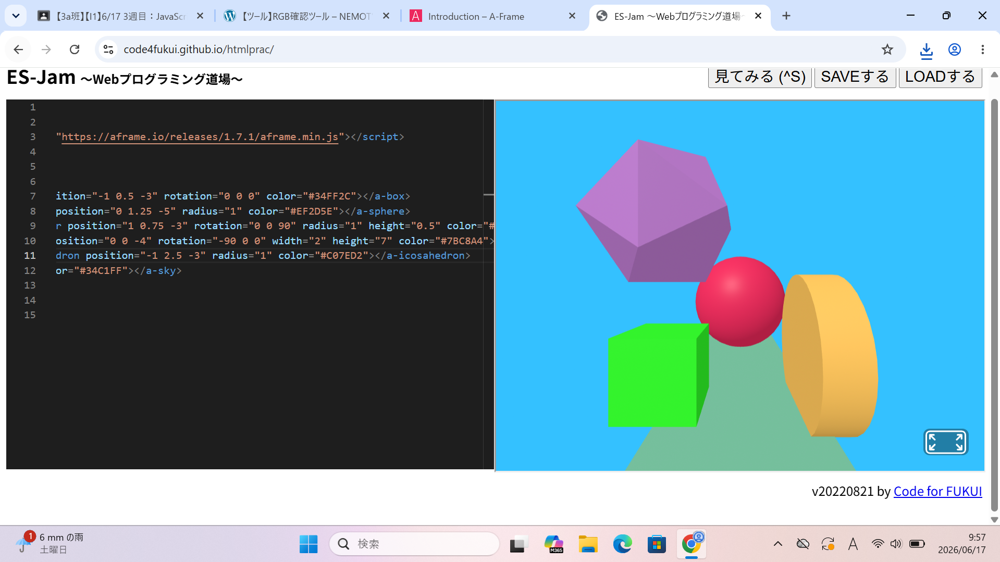
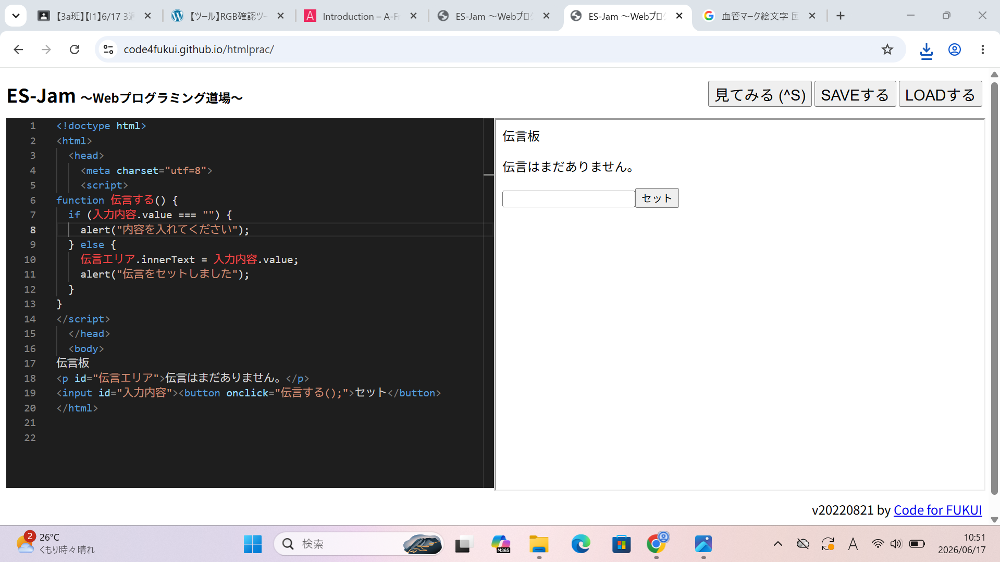

３週目のレポート ： 公大高専１年実習I-1
3a班11番 片山剛志
第3週目
3-1 JavaScript体験：VR空間を作る

自作した３次元空間
1.内容
元々あった三次元空間にある図形の
大きさや色、形を変えるプログラムをJavaScriptで書いた。
私は新たに正二十面体を直方体の上に追加した。
2.感想
色や大きさや形の決め方さえ理解すれば自分の好きなように
編集できるので他の人との差別化を図れて良いとおもった。
3-2 JavaScript体験：伝言プログラムを作る

伝言板
1.内容
JavaScriptを用いて伝言板を作成した。
実際に実行するときの文字を入力する欄を設け、セットのボタンを押すと
上にその入力している内容が表示されるというものになっている。
2.感想
指定のプログラムのコードを入力するだけで
実行する画面に文字を入力する欄とセットボタンが
表示されるという内容がおもしろかった。
各ページへのリンク
1週目のレポート
2週目のレポート
3週目のレポート
私のホームページ